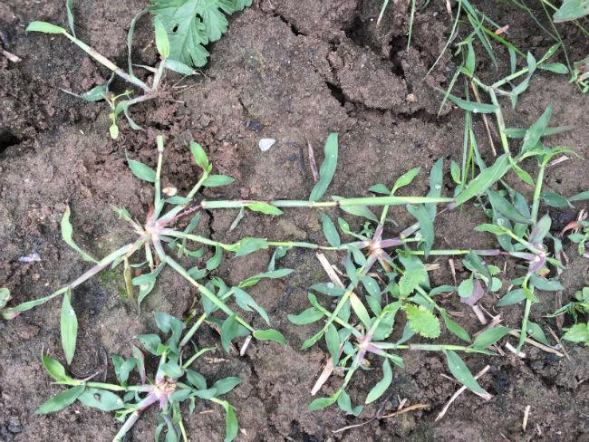

Sanne de Vries
1u geleden

Sanne de Vries
1u geleden
Joris Dijkhof
2u geleden
Vraagje..hoe weet je of de plant klaar is om te oogsten? Ik wil niet te vroeg beginnen
Eva Jansen
1u geleden
Je kunt het meestal zien aan de bloemen of het blad, maar in de app staat ook wanneer je moet oogsten.
Alle reacties bekijken

Ruby van Witten
3u geleden
Ik heb de laatste tijd veel last van dit soort onkruid. Wat kan ik hier het beste tegen doen?
